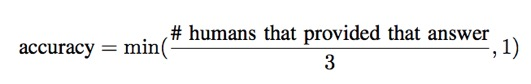

Overview
We propose an artificial intelligence challenge to design algorithms that assist people who are blind to overcome their daily visual challenges. For this purpose, we introduce the VizWiz dataset, which originates from a natural visual question answering setting where blind people each took an image and recorded a spoken question about it, together with 10 crowdsourced answers per visual question. Our proposed challenge addresses the following two tasks for this dataset: (1) predict the answer to a visual question and (2) predict whether a visual question cannot be answered. Ultimately, we hope this work will educate more people about the technological needs of blind people while providing an exciting new opportunity for researchers to develop assistive technologies that eliminate accessibility barriers for blind people.
Dataset
- 20,000 training image/question pairs
- 200,000 training answer/answer confidence pairs
- 3,173 image/question pairs
- 31,730 validation answer/answer confidence pairs
- 8,000 image/question pairs
- Python API to read and visualize the VizWiz dataset
- Python challenge evaluation code
The download file is organized as follows:
- Visual questions are split into three JSON files: train, validation, and test. Answers are publicly shared for the train and validation splits and hidden for the test split.
- APIs are provided to demonstrate how to parse the JSON files and evaluate methods against the ground truth.
- Details about each visual question are in the following format: "answerable": 0,
"image": "VizWiz_val_000000028000.jpg",
"question": "What is this?"
"answer_type": "unanswerable",
"answers": [
{"answer": "unanswerable", "answer_confidence": "yes"},
{"answer": "chair", "answer_confidence": "yes"},
{"answer": "unanswerable", "answer_confidence": "yes"},
{"answer": "unanswerable", "answer_confidence": "no"},
{"answer": "unanswerable", "answer_confidence": "yes"},
{"answer": "text", "answer_confidence": "maybe"},
{"answer": "unanswerable", "answer_confidence": "yes"},
{"answer": "bottle", "answer_confidence": "yes"},
{"answer": "unanswerable", "answer_confidence": "yes"},
{"answer": "unanswerable", "answer_confidence": "yes"}]
These files show two ways to assign answer type: train.json, val.json. "answer_type" is the answer type for the most popular answer (used in VizWiz 1.0) and "answer_type_v2" is the most popular answer type for all answers' answer types (used in VQA 2.0).

This work is licensed under a Creative Commons Attribution 4.0 International License.
Challenge
Our proposed challenge is designed around the VizWiz dataset and addresses the following two tasks:
Task 1: Predict Answer to a Visual Question
Given an image and question about it, the task is to predict an accurate answer. Inspired by the VQA challenge, we use the following accuracy evaluation metric:

The team which achieves the maximum average accuracy for all test visual questions wins this challenge.
Task 2: Predict Answerability of a Visual Question
Given an image and question about it, the task is to predict if the visual question cannot be answered (with a confidence score in that prediction). We use Python's average precision evaluation metric which computes the weighted mean of precisions under a precision-recall curve. The team that achieves the largest average precision score for all test visual questions wins this challenge.
Submission Instructions
Evaluation Servers
Teams participating in the challenge must submit results for the full 2018 VizWiz test dataset (i.e., 8,000 visual questions) to our evaluation servers, which are hosted on EvalAI. As done for prior challenges (e.g., VQA, COCO), we created different partitions of the test dataset to support different evaluation purposes:
- Test-dev: this partition consists of 4,000 test visual questions and is available year-round. Each team can upload at most 10 submissions per day to receive evaluation results.
- Test-challenge: this partition is available for a limited duration before the European Conference on Computer Vision (ECCV) in September 2018 to support the challenge, and contains all 8,000 visual questions in the test dataset. Results on this partition will determine the challenge winners, which will be announced during a workshop hosted at ECCV. Each team can submit at most five results files over the length of the challenge and at most one result per day. The best scoring submitted result for each team will be selected as the team's final entry for the competition.
- Test-standard: this partition is available to support algorithm evaluation year-round, and contains all 8,000 visual questions in the test dataset. Each team can submit at most five results files and at most one result per day. Each team can choose to share their results publicly or keep them private. When shared publicly, the top submission result will be published to the public leaderboard.
Uploading Submissions to Evaluation Servers
To submit results, each team will first need to create a single account on EvalAI. On the platform, then click on the "Submit" tab in EvalAI, select the submission phase ("test-dev", "test-challenge", or "test-standard"), select the results file (i.e., JSON file) to upload, fill in required metadata about the method, and then click "Submit". The evaluation server may take several minutes to process the results. To have the submission results appear on the public leaderboard, when submitting to "test-challenge", check the box under "Show on Leaderboard".
To view the status of a submission, navigate on the EvalAI platform to the "My Submissions" tab and choose the phase to which the results file was uploaded (i.e., "test-dev", "test-challenge", or "test-standard"). One of the following statuses should be shown: "Failed" or "Finished". If the status is "Failed", please check the "Stderr File" for the submission to troubleshoot. If the status is “Finished”, the evaluation successfully completed and the evaluation results can be downloaded. To do so, select “Result File” to retrieve the aggregated accuracy score for the submission phase used (i.e., "test-dev", "test-challenge", or "test-standard").
The submission process is identical when submitting results to the "test-dev", "test-challenge", and "test-standard" evaluation servers. Therefore, we strongly recommend submitting your results first to "test-dev" to verify you understand the submission process.
Submission Results Formats
Use the following JSON formats to submit results for both challenge tasks:
Task 1: Predict Answer to a Visual Question
results = [result]
result = {
"image": string, # e.g., 'VizWiz_test_000000020000.jpg'
"answer": string
}
Task 2: Predict Answerability of a Visual Question
results = [result]
result = {
"image": string, # e.g., 'VizWiz_test_000000020000.jpg'
"answerable": float #confidence score, 1: answerable, 0: unanswerable
}
Leaderboards
The Leaderboard pages for both tasks can be found here.
Rules
- Teams are allowed to use external data to train their algorithms. The only exception is teams are not allowed to use any annotations of the test dataset.
- Members of the same team are not allowed to create multiple accounts for a single project to submit more than the maximum number submissions permitted per team on the test-challenge and test-standard datasets. The only exception is if the person is part of a team that is publishing more than one paper describing unrelated methods.
Baseline Code
The code for results reported in our CVPR 2018 publication is located here.
Publications
Danna Gurari, Qing Li, Abigale J. Stangl, Anhong Guo, Chi Lin, Kristen Grauman, Jiebo Luo, and Jeffrey P. Bigham. "VizWiz Grand Challenge: Answering Visual Questions from Blind People." IEEE Conference on Computer Vision and Pattern Recognition (CVPR), 2018.
Jeffrey P. Bigham, Chandrika Jayant, Hanjie Ji, Greg Little, Andrew Miller, Robert C. Miller, Robin Miller, Aubrey Tatarowicz, Brandyn White, Samuel White, and Tom Yeh. "VizWiz: Nearly Real-time Answers to Visual Questions." ACM User Interface Software and Technology Symposium (UIST), 2010.
| PDF |
Contact Us
For general questions, please review our FAQs page for answered questions and to post unanswered questions.
For questions about code, please send them to Qing Li at liqing@ucla.edu.
For other questions, comments, or feedback, please send them to Danna Gurari at danna.gurari@ischool.utexas.edu.